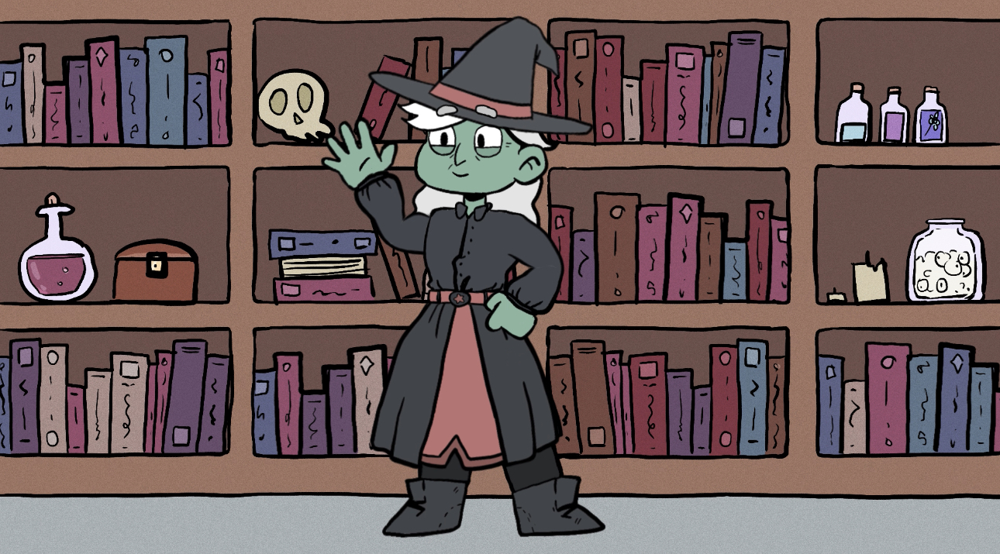
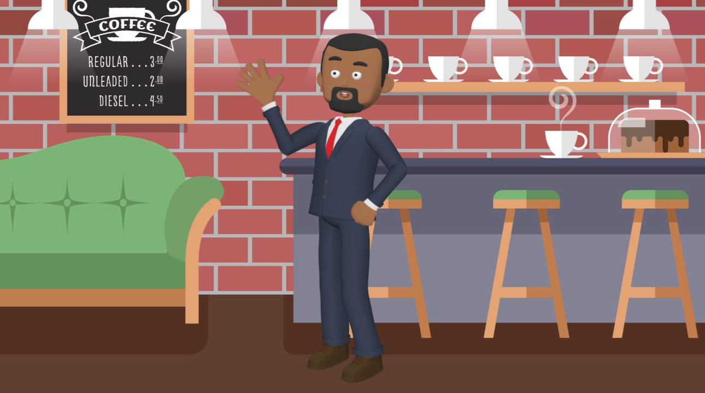
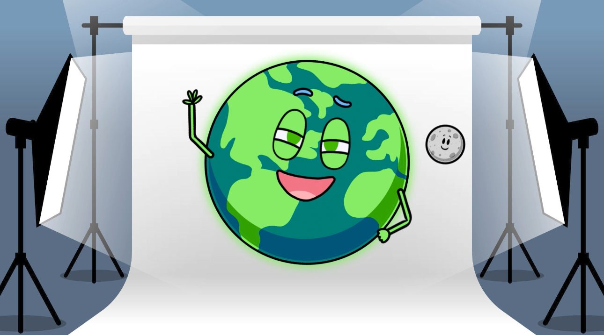

Next
An Interactive Inforgraphic on the Impact of Social Media

The Wise Witch and Mental Health

Smarty Scholar and Academics
Your Beauty Bestie and Beauty Standards

Digital Dynamo and Pro Tips for the Digital World